Teaching videos are long, and finding the moment you need means scrubbing. This page shows the product idea: the video indexed by what is visible in the surgical field, so an educator or fellow jumps straight to "bipolar in use" or a named landmark instead of hunting for it. In the full product every minute of every video is indexed; this demo indexes one 90-second window as a proof of the experience.
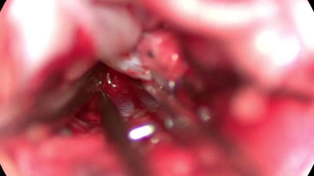
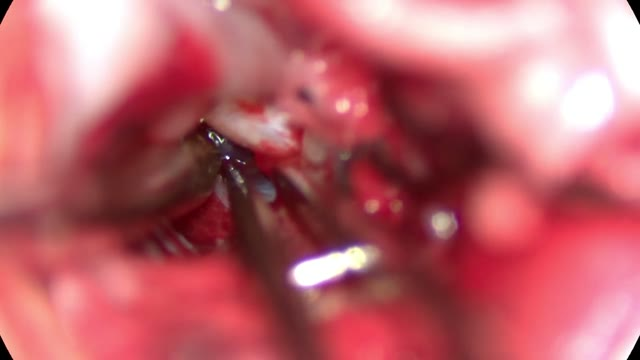
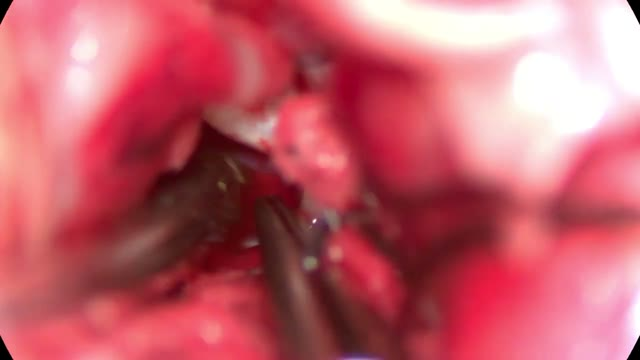
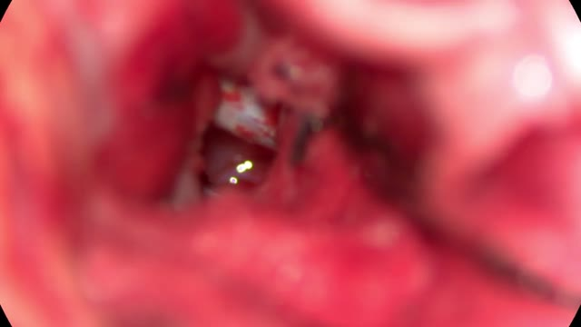
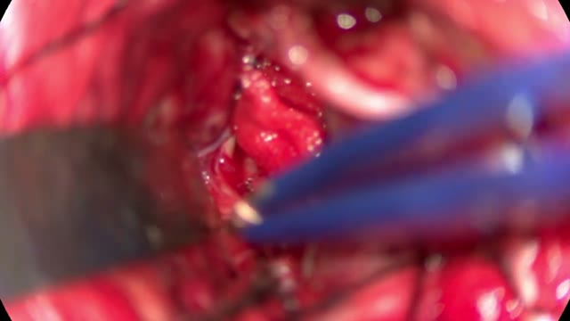
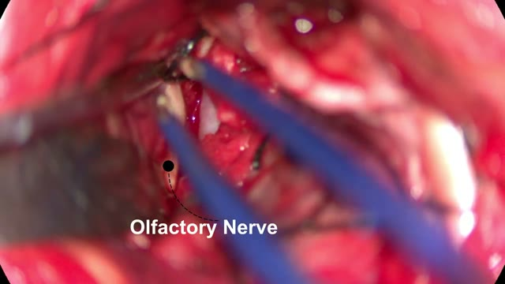
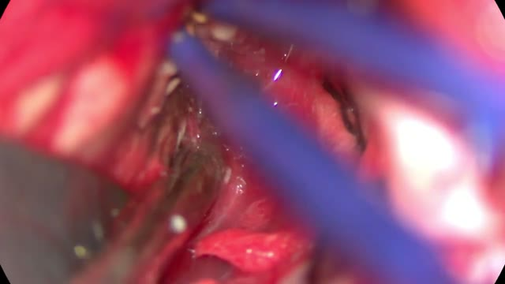
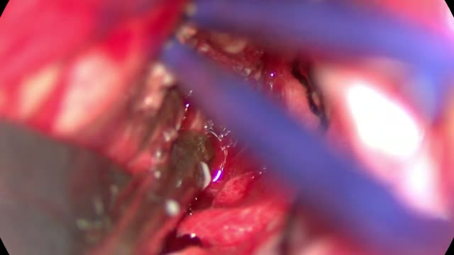
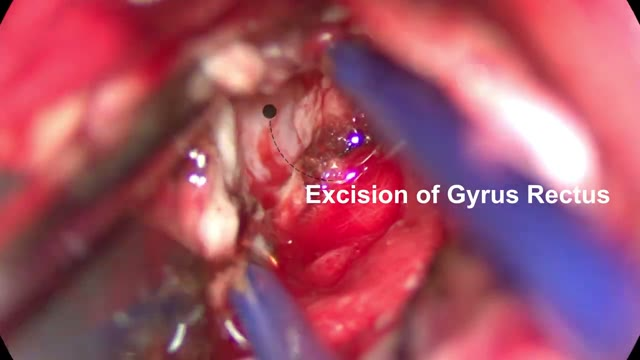
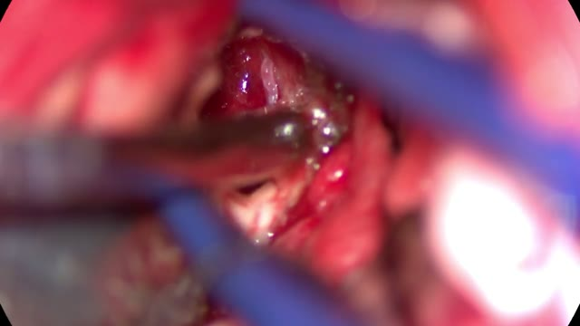
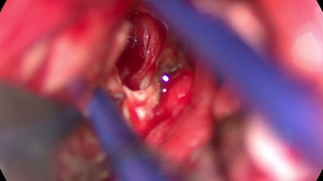
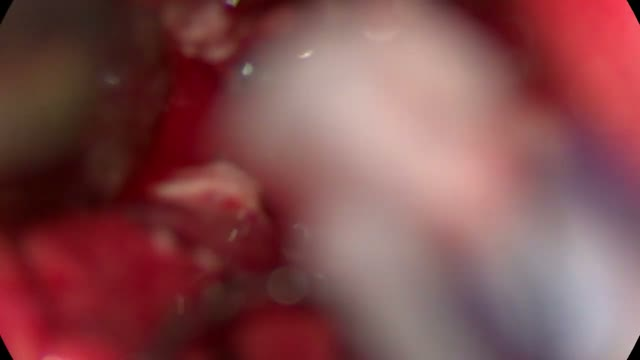
A vision model labeled one frame every 5 seconds (18 frames) for suction, bipolar forceps, other instrument, or no instrument, zero-shot: no training, no manual annotation, no model infrastructure. Consecutive frames with the same tools were merged into the intervals above; the two orange flags are caption overlays already present in the video that the model read and indexed. This is a product demonstration, not a validation study; the measurement plan that would validate label quality and cost lives in POC_PLAN.md in this repository.
Video: Operative Video: Acom Aneurysm Microsurgical Clipping by Arunav Sharma, YouTube, Creative Commons Attribution license as reported by YouTube. This page plays an optimized copy of the source video, with sampled-frame thumbnails, under the same attribution. The uploader's authority to license the footage has not been independently verified.